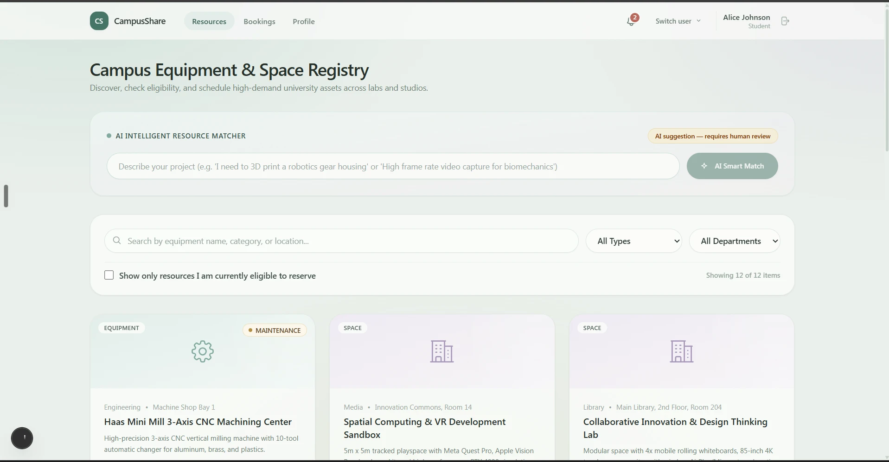
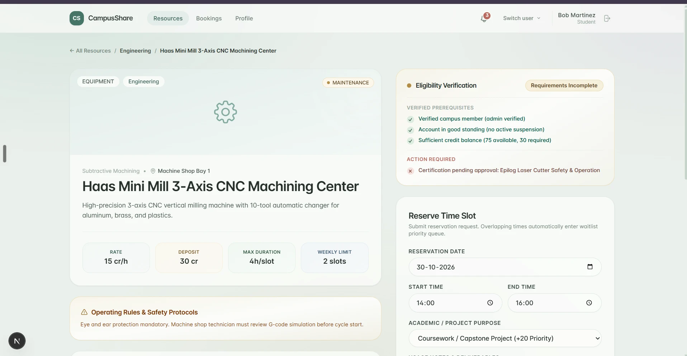
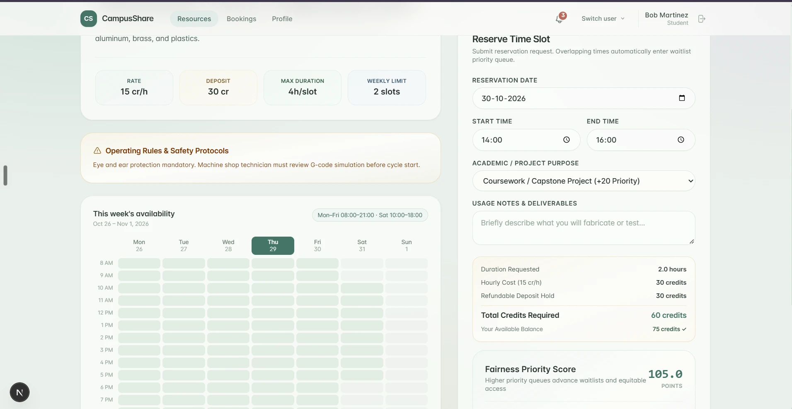
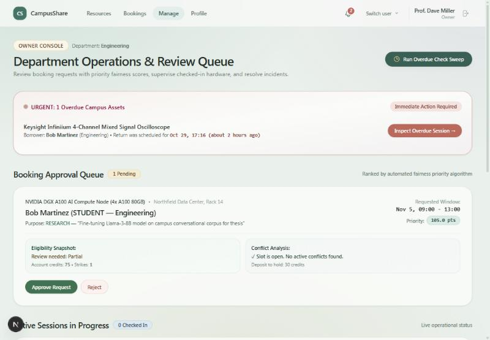
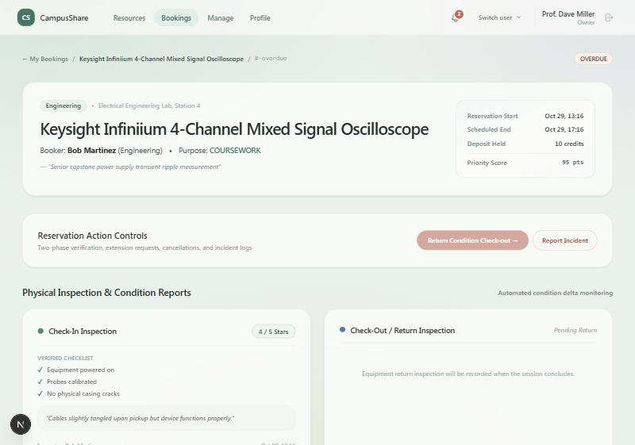
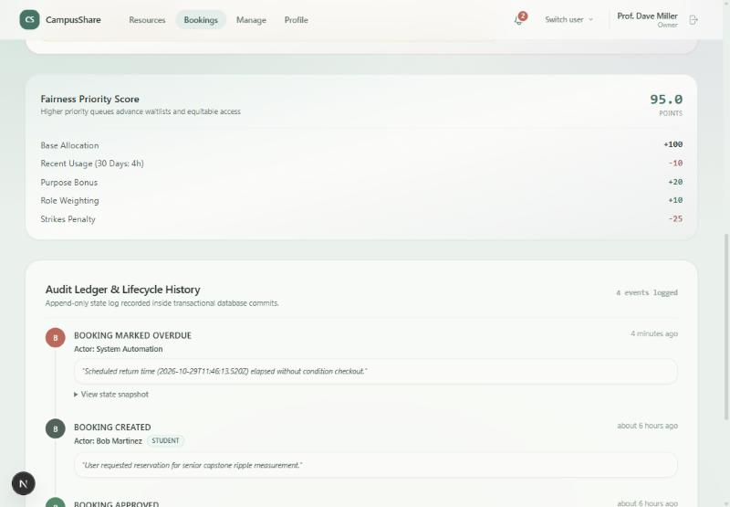
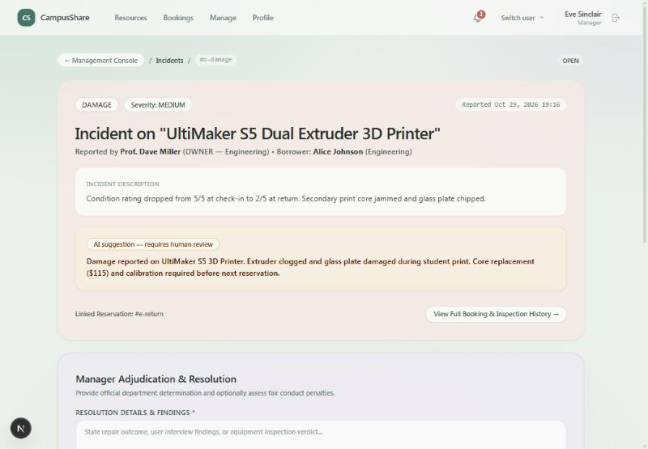
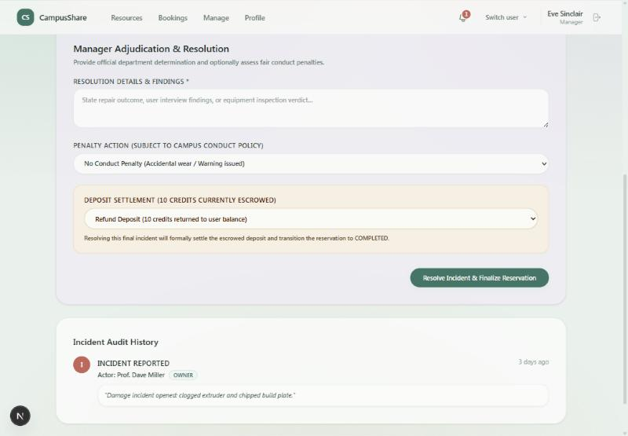
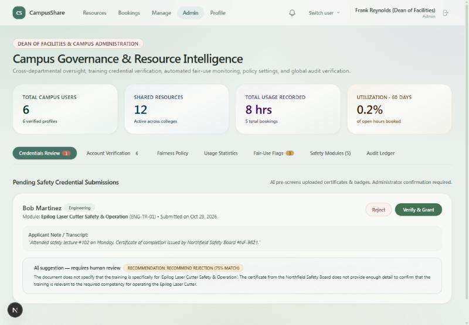

A trusted platform that lets a campus share its idle labs, equipment and spaces — safely, fairly, and with a full audit trail.
Colleges, laboratories, makerspaces and community organisations own valuable equipment and spaces that sit unused for long periods. At the same time, nearby students, researchers, creators and early-stage teams cannot afford to buy or privately rent the same resources. An ordinary booking calendar does not fix this, because sharing institutional property is a trust problem: who is allowed to use what, who approves it, what condition it was in, and what happens when something breaks or comes back late.
CampusShare is a working web platform that handles the whole sharing lifecycle with a person in charge of every important decision:
A reviewer can complete this whole journey in the running app in about five minutes, switching between roles with one click.
Colleges, university departments, labs, makerspaces and small organisations that hold costly equipment and spaces: laser cutters, 3D printers, cameras, GPU machines, studios, classrooms and workshops.
Students, researchers, creators and early-stage teams nearby who need the same resources but cannot afford to buy them or rent them privately.
Constantly. Specialised equipment is typically in active use only during class or lab hours, so it sits idle in the evenings, at weekends and between projects. Anyone who needs it meets the same obstacles every time: finding out who owns it, whether they are allowed to use it, and who to ask.
| Who | Cost |
|---|---|
| Owners | Equipment idles and loses value. Informal sharing is risky: with no record of who used it, why, and in what condition, owners face misuse, unreported damage, scheduling clashes and unfair allocation. Many simply refuse to share. |
| Users | Projects stall or never start, because the only options are buying equipment, paying commercial rates, or waiting weeks for access. |
| Institutions | A plain booking calendar shows availability but does nothing about training requirements, approvals, deposits, damage, late returns or fairness, so these decisions stay manual, unexplained and unrecorded. |
| Need when sharing institutional property | Typical booking calendar |
|---|---|
| Check training, qualification and standing first | Anyone can book |
| Owner approval with a recorded reason | Instant, unexplained booking |
| Fair access when demand exceeds supply | First come, first served; easy to hoard |
| Condition before and after use | No record |
| Damage, delay and conflict handling | Handled by email, if at all |
| A history both sides can trust | None |
We start with a university campus, where users already share an institution, a verification path and clear safety training. The same approach extends to makerspaces and community organisations.
| Role | Who | Can do in CampusShare |
|---|---|---|
| Student / Researcher | People who need access to equipment and spaces | Browse, check eligibility, request, check in and return, cancel or extend, report incidents, submit training evidence |
| Owner | Lab supervisors and faculty who own resources | List resources, set conditions, review and decide on requests for their own resources |
| Manager | Department managers | Review requests and resolve incidents for their department, settle deposits and penalties |
| Administrator | Campus facilities and administration | Verify accounts and certificates, set fairness policy, view analytics and the global audit log |
All permissions are enforced on the server, not only hidden in the interface. The signed-in user is re-read from the database on every request, so a suspension or role change applies immediately.
CampusShare turns sharing into one connected workflow. Each stage below maps to a challenge requirement.
| Stage | What CampusShare does |
|---|---|
| List | Owners publish equipment and spaces with location, weekly opening hours, rules, deposit, hourly credit cost, maximum hours per booking, weekly limit and required training. |
| Discover | Search, filters by type and department, an “I am eligible” toggle, and plain-language AI matching (for example “laser-cut acrylic”). |
| Qualify | Before requesting, users see a checklist: verified account, good standing, enough credits, department and role rules, and unexpired safety training. Missing items are named. |
| Request | The form shows duration, cost, refundable deposit and the user's fairness score before they submit. Overlapping times enter a waitlist automatically. |
| Decide | Owners and managers approve, reject or waitlist, with a mandatory written reason. They see eligibility, conflicts and the score breakdown side by side. |
| Use | Check-in and return use a checklist, a 1–5 rating, notes and a photo. A worse rating at return drafts a damage incident automatically. |
| Resolve | Managers settle incidents: no penalty, strike, credit fine or suspension, and refund or forfeit of the held deposit. |
| Trace | Every approval, rejection, cancellation, extension, check-in, return and incident is written to an append-only audit log. |
PENDING (within limits) or WAITLISTED (slot already taken)WAITLISTED → PENDING when a slot frees up, by priority scorePENDING → APPROVED (owner or manager) or REJECTED (with a reason)APPROVED → CHECKED_IN (condition report) or CANCELLED (cancel, or no-show with a strike and forfeited deposit)CHECKED_IN → COMPLETED (clean return) or RETURNED (damage: incident opened, deposit held) or OVERDUE (past end time: delay incident)RETURNED → COMPLETED once the incident is resolvedEach use case names the actor, the goal, the main flow and the outcome. All are available in the working prototype.
Goal: Make an idle resource available on the owner's terms.
Flow: Open List New Resource; enter name, type, category, location, description and safety rules; set weekly opening hours, deposit, hourly credit cost, maximum hours and weekly limit; add requirements (training, role, department, minimum credits); save.
Outcome: The resource appears in the registry with its conditions; the listing is recorded in the audit log.
Goal: Find equipment that fits a need.
Flow: Search and filter, or describe the need in plain language (“high frame rate video capture”) and receive ranked matches with reasons.
Outcome: A short list of fitting resources, with AI matches labelled as a suggestion.
Goal: Know exactly what is needed before asking, and supply what is missing.
Flow: Open a resource; read the checklist of met and missing requirements; from the profile, submit a safety credential with an evidence note.
Outcome: The certificate shows as pending until an administrator decides.
Goal: Grant access only to qualified people.
Flow: Review pending certificates with an AI pre-screen (advisory); press Verify or Reject; verify or revoke accounts.
Outcome: The user is notified; verified certificates carry an expiry date and unlock the resource.
Goal: Reserve a slot within fair-use limits.
Flow: Choose date, time and purpose; see duration, cost, deposit and fairness score; submit. The system re-checks eligibility, weekly caps, credits and conflicts.
Outcome: The request becomes PENDING for review, or WAITLISTED with a position and an explained score.
Goal: Decide with full information and keep control.
Flow: Open the approval queue; compare eligibility snapshot, conflict analysis and priority score; approve or reject with a written reason.
Outcome: The user is told the decision and the reason. Approving a slot moves competing pending requests for the same time to the waitlist, which prevents double booking.
Goal: Give the next most deserving person the slot when it frees up.
Flow: When an approved booking is cancelled, waitlist scores are recalculated with waiting time; the top eligible candidate with no conflict moves to the owner's review queue.
Outcome: The candidate and the owner are notified; the owner still approves.
Goal: Document the state of the equipment before use.
Flow: Open the approved booking; complete the checklist, rate the condition 1–5, add notes and a photo; confirm. (Check-in opens 15 minutes before the start; demo mode lifts this so reviewers can test any time.)
Outcome: The booking is CHECKED_IN; the baseline condition report is stored.
Goal: Close the booking and expose any damage.
Flow: Complete the return checklist, rating, notes and photo; confirm. Usage credits are charged.
Outcome: A clean return completes the booking and refunds the deposit. A rating lower than at check-in drafts a damage incident with an AI summary and holds the deposit.
Goal: Handle damage, delay or misuse fairly and on the record.
Flow: Open the incident queue; read the report and the AI summary (suggestion only); write the findings; choose no penalty, a strike, a credit fine, or a suspension; refund or forfeit the deposit.
Outcome: The incident is resolved, the borrower is notified, and the booking completes once every incident on it is resolved.
Goal: Keep resources moving without manual chasing.
Flow: An automated sweep marks past-due sessions OVERDUE and opens a delay incident; cancels no-shows more than 30 minutes late with a strike and forfeited deposit; sends one-hour reminders.
Outcome: The borrower and owner are notified and every step is audited.
Goal: Adapt to changing needs without breaking fairness.
Flow: Request an extension (checked against conflicts, per-booking maximum and weekly caps) or cancel (deposit refunded, waitlist promoted).
Outcome: The affected people are notified and the change is logged.
Goal: Keep rules fair and see how the system is used.
Flow: Edit fairness policy (weekly cap, score weights, monthly credit grant); review usage statistics and fair-use flags; read the global audit ledger.
Outcome: Every policy change is itself logged with who changed it and why.
Goal: Trust the record.
Flow: Open any booking or incident to see the timeline of decisions, reasons, condition reports and incidents, with who did each step and when.
Outcome: Both parties share one complete, append-only history of the transaction.
When demand exceeds availability, requests are ranked by a score that is shown to both the user and the reviewer. The score ranks requests; a person still approves or rejects.
| Measure | How it prevents hoarding or unfairness |
|---|---|
| Heavy-use penalty | People who have used a lot recently rank lower than people who have not |
| Waitlist time bonus | Waiting counts, so nobody is starved |
| Weekly hour cap | Campus-wide limit per person (default 20 hours) plus per-resource weekly limits |
| Credits and deposits | Monthly credit grant, hourly credit costs, refundable deposit held until a clean return |
| Strikes | No-shows and conduct penalties lower priority; three strikes block booking |
| Explainability | The full score breakdown is visible to the user and the reviewer, and saved with the booking |
| Admin control | Weights and caps are editable by an administrator; every change is logged |
AI is used where it saves time and never decides access, safety or penalties.
gpt-4o-mini, low temperature, 4-second timeout).There are no agents or multi-step chains in the product: each feature is a single prompt and call. AI output never changes a booking status, balance, strike or account. For example, the official severity of an auto-drafted damage incident comes from a fixed rule; the AI's suggested severity is stored separately for the manager to consider.
| Area | Controls |
|---|---|
| Access control | Server-side role and ownership checks on every action; the user is re-read from the database on each request |
| Credentials | bcrypt-hashed passwords; signed, HTTP-only session cookies; secrets required in production |
| Input safety | All inputs validated with Zod; allowed values enforced for types, statuses and severities |
| Least information | Users see their own bookings; owners and managers see only what they need to review; certificate documents are visible to administrators; no personal names are sent to the AI for usage analysis |
| Guarded endpoints | The overdue-sweep endpoint needs a secret; demo logins can be switched off with a setting |
| Audit log | Append-only; written in the same database transaction as each change; no update or delete path in the application |
| Human oversight | Access, safety and penalty decisions are always made by an authorised person, with a recorded reason |
Next.js 15 (App Router, Server Actions) · React 19 · TypeScript · Tailwind CSS 4 · Prisma 6 with SQLite · Zod 4 · jose · bcryptjs · OpenAI SDK (optional) · Vitest
Users, Resources and requirements, Trainings and certifications, Bookings, Condition reports, Incidents, Notifications, Audit log, Fairness settings
| Module | Responsibility |
|---|---|
| eligibility | Checks account, standing, credits, role, department and unexpired training; returns what is met and what is missing |
| conflicts | Detects overlaps, opening-hours violations, maintenance and maximum-duration breaches |
| fairness | Computes the priority score; enforces weekly caps; grants monthly credits; reads the admin policy |
| bookingService | The booking state machine: request, approve, reject, cancel, check in, return, extend, waitlist promotion |
| incidentService | Resolves incidents, applies penalties, settles deposits, completes bookings |
| overdue | Marks overdue sessions, cancels no-shows, sends reminders, refreshes waitlist scores |
| notifications / audit | In-app alerts and the append-only audit trail |
| ai | Prompt building, validation and rule-based fallbacks for the four AI features |
26 automated tests (unit and integration) run against a temporary copy of the database. They cover eligibility, fairness scoring, conflict detection, booking state, and integration tests on a real database for the full lifecycle, double-booking prevention, waitlist promotion, overdue and no-show sweeps, incident resolution with deposit settlement, and role boundaries. The project also builds and type-checks cleanly.
Screens from the running prototype, in lifecycle order.









| Expected outcome | In CampusShare |
|---|---|
| Listings with availability, location, access conditions, rules | Owner listing form; resource page with weekly availability calendar |
| Search, filtering or intelligent matching | Filters, eligibility toggle, AI matching |
| Profiles and verification | Profile page; administrator verification of accounts and certificates |
| Eligibility checks | Pre-request checklist covering training, standing, credits, role, department |
| Approval, rejection and waitlist | Reviewer decisions with mandatory reasons; automatic waitlist |
| Transparent handling of competing requests | Conflict detection; explained priority score; double-booking prevention |
| Check-in and check-out; before/after condition | Checklist, rating, notes and photo at both points |
| Damage, delay and incident reporting | Incident queue; automatic damage drafts; overdue delay incidents |
| Notifications | Approvals, rejections, waitlist moves, reminders, cancellations, overdue |
| Fair-usage measures | Caps, credits, deposits, priority score, no-show strikes |
| Role-based access | Student, Researcher, Owner, Manager, Administrator |
| Auditable history | Append-only audit log, visible in booking, incident and admin views |
| Privacy and security | See section 8 |
| AI where valuable, humans decide | Section 7; every AI result is reviewable and labelled |
This is a prototype for a single campus.
Live demo: https://campusshare-rpjx.onrender.com — sign in with any demo account below. The free host sleeps when idle, so the first load can take up to a minute, and the demo data resets after a restart.
Repository: github.com/Shrey-Vhr/Code-Conqueror (the README has a two-minute setup and a five-minute guided tour).
Run: npm install, npm run db:reset, npm run dev, then open localhost:3000 and pick a demo account.
| Role | Password | |
|---|---|---|
| Student | alice@northfield.edu | Alice2024! |
| Student | bob@northfield.edu | Bob2024! |
| Researcher | carol@northfield.edu | Carol2024! |
| Owner | dave@northfield.edu | Dave2024! |
| Manager | eve@northfield.edu | Eve2024! |
| Administrator | frank@northfield.edu | Frank2024! |
Demo credentials for the seeded sample campus only.
Team shreyvohraa
The product was researched and specified, then built with AI coding assistance (Claude and Antigravity), followed by several rounds of independent review and testing to catch security and logic problems before submission.